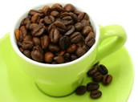
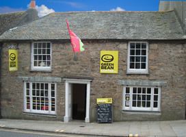
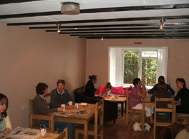

The Green Bean Coffee Shop, Penzance
This is an archived page. Visit the new Green Bean page
|
The Green Bean Coffee Co provide a welcoming and relaxed environment to enjoy a delicious coffee and a light bite with friends.
Since launching in the summer of 2007, the Green Bean has been serving its own special blend of coffee, freshly prepared food & home baked cakes to the people of Penzance. The coffee, which is sourced from central Latin America, is a blend of 100% arabica beans (the tasty ones)ensuring a full flavour and aromatic coffee every time.
Every coffee taste is catered for. Espresso, Cappuccino, latte, macchiato & iced coffee's are all freshly made. For those with a sweet tooth, a range of syrups are available to add to your coffee, for that extra special taste. The Green Bean is also serving TeaPigs whole leaf tea – so now you can enjoy both the best cup of coffee and tea available in Penzance! If you fancy the ultimate in hot chocolate, grab yourself a Green Bean Ciccolatta. A dairy milk or white chocolate drink served with lashings of cream, marshmallows and chocolate sauce. Truly Yummy!
To go with the coffee, the Green Bean offers award winning Montezuma’s organic chocolate, scrumptious Byron Bay cookies, home-baked cakes (including gluten free) aswell as a range of paninis and sandwiches. Local produce is used wherever possible in fillings for a real taste of Cornwall.
Being green is naturally one of the Green Bean Cafés prioritys beyond providing great food and drink. As mentioned, food is sourced locally where possible, so locally in fact that some salad for sandwiches is grown in the garden (seasonal). That’s not so much food miles, as food metres! The coffee and it's growers are certified by the rainforest alliance, which aims to protect eco systems worldwide that are used in the production of food and other goods. Any takeaway food you purchase is in recycled and recyclable packaging, or at least biodegradable.
The Green Bean, in conjunction with Little Luvvers, the little Cornish baby shop, and Party Style offer a tailor made Baby Shower service. You can book your party in Little Luvvers, opposite The Green Bean, and arrange a baby shower in the run up to the birth of your baby.
What the Green Bean Coffee Co. offer is a great place to meet friends in a relaxed and cozy atmosphere. Great coffee, comfy sofas, filling food and staff who actually know how to make the perfect coffee.............
What a relief!!
|  |  |
The Green Bean Coffee Co. - Penzance - 01736 363737

{kind=link}